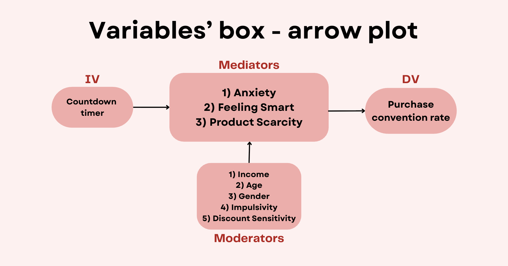

The Impact of Countdown Timer on Purchase Willingness
Countdown timers don't directly increase purchase intention — but they work indirectly by raising perceived product scarcity. We proved it with a randomized A/B experiment and mediation analysis on 183 valid responses.
Problem
E-commerce platforms use countdown timers everywhere, assuming time pressure drives conversion. But does it actually work — and if so, through what psychological mechanism? We designed an experiment to separate the direct effect of timers from their indirect effects through anxiety, "feeling smart," and perceived scarcity.
Data & Method
- Randomized A/B survey experiment (Google Forms): one group saw a product page with a countdown timer, the other without. Attention-check questions filtered out invalid responses — 183 valid out of 226 collected (ages 15–62, three countries).
- Reliability checks: all multi-item constructs reached Cronbach's α ≥ 0.79 (anxiety 0.61), with significant inter-item correlations.
- Analysis pipeline: chi-square test for the main effect, mediation analysis for three psychological pathways, and moderated logistic regression for five individual-difference variables (age, income, gender, impulsivity, discount sensitivity).
Key Findings
p = 0.125
No significant direct effect of timers on purchase (chi-square) — the common assumption fails
p = 0.037
Significant indirect effect via perceived scarcity (mediation estimate 0.067)
R² = 0.298
McFadden pseudo-R² of the full logistic model (Δχ² = 74.5, p < .001)
- Timers influence purchase only through perceived scarcity — the anxiety and "feeling smart" pathways were both non-significant.
- The strongest direct drivers of purchase were feeling smart about the deal (p < .01), discount sensitivity (p < .05), and age (p < .05) — not time pressure.
- None of the five moderation hypotheses held: the timer effect doesn't vary by impulsivity, discount sensitivity, age, income, or gender.
Business Impact
A countdown timer alone won't lift conversion. It works by creating a psychological context of scarcity — so it should be paired with genuine scarcity cues and "smart deal" framing, and targeted at discount-sensitive segments, rather than deployed as a blanket urgency tactic.
